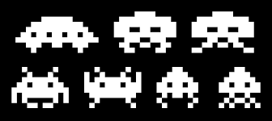

Space Invaders |
|
|
One evening, when I should have been recording, I had a sudden nostalgic urge to play the old computer game Space Invaders. I had a version of this game on my Commodore PET (from my college days, which was pretty cool back in 1977). But I do not have one for my Mac, and on a whim I decided to try to code a version of the game for a browser so it could be easily shared. It may seem simplistic, but this game was pretty revolutionary when it came out. The aliens were modeled after octopi, squids and crabs! It was the first game to save high scores. Its music interacted with the on-screen animation to influence the player. As you destroyed invaders they would speed up in their movements, and the music sped up along with it. This would fluster many players :-) Here are some good reference videos on YouTube to see what the game actually looked like and sounded like back in 1978 and 1979: Space Invaders (1978) - 100% Longplay (No Commentary) SPACE INVADERS PART 2 ARCADE MAME VIDEO GAME TAITO 1979 THE EVOLUTION OF SPACE INVADERS

This image was very helpful for creating the images. I
found it on Google Images.
|
|